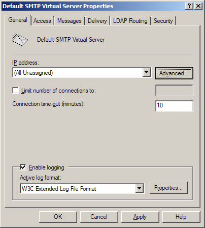
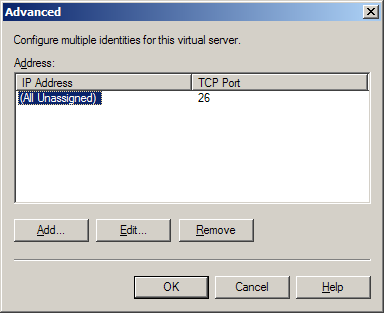
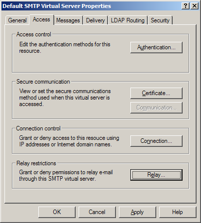
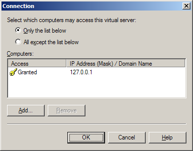
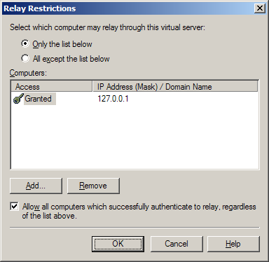

IIS SMTP Service Configuration Guide
Translations:
Configuring IIS SMTP Service
In "Internet Information Services (IIS) Manager" snap-in right-click "Default SMTP Virtual Server" and select "Properties".
- Specify logging settings similar to Web and FTP ones described above.
 - If you have SMTP service of the mail server listening on the same IP address you can change the 25 port to some other, say 26. On "General" tab click "Advanced..." button and change the Port from 25 to 26; otherwise, Microsoft SMTP service will be conflicting with SMTP service of the mail server.
- Other option is changing not the port, but listening IP address. This case you can leave SMTP service on 25 port and it will not be conflicting with other SMTP service provided it works on different IP.
 - Click "Access" tab
 - Click "Connection..." button and specify that only the host with 127.0.0.1 IP address (localhost) can connect to the SMTP service.
 - Click "OK" button to save your changes and close the dialog.
- Click "Relay..." button and specify that only the host with 127.0.0.1 IP addresses may relay through this SMTP server.
 - Click "OK" button to save your changes and close the dialog.
- Click "OK" button again to save SMTP service properties and close the dialog.